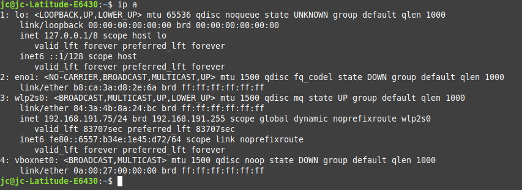

3.3 Fail2Ban
1. Introducción
En este capítulo, se describe cómo instalar y configurar una herramienta para equipos con sistema operativo Linux para detectar y bloquear ataques de fuerza bruta.
Fail2ban es una aplicación de Linux que permite evitar accesos no autorizados al servidor. Funciona bloqueando, o baneando, las IP que realicen varios intentos de acceso incorrectos al servidor.
Fail2ban sin ser estrictamente una aplicación IPS, realiza muchas de las funciones que realiza un sistema de prevención de intrusos, al menos en lo que a intentos de conexión por fuerza bruta se refiere.
Fail2ban se aplica a muchos servicios que requieren de autenticación para acceder y deniega o banea aquellos intentos de acceso por fuerza bruta mirando en los logs de aplicaciones como Apache, sshd, qmail, vsftpd, postfix, etcétera. Cuando fail2ban detecta un ataque de intrusión por fuerza bruta escaneando los logs de estos servicios, crea una regla de firewall que impide la conexión desde la IP o redes IP desde donde se origina el ataque.
Está escrito en el lenguaje Python. Es software libre se distribuye bajo licencia GPL. Características principales:
- Arquitectura cliente/servidor.
- Multihilo.
- Altamente configurable.
- Soporte de Gamin/Pyinotify para detectar modificaciones en tiempo real de los logs.
- Parseo de archivos y búsqueda de patrones.
- Ejecución de comandos ante un ataque.
- Usa netfilter/iptables y también TCP wrappers.
- Soporta rotación de ficheros.
- Soporta muchos servicios como ssh, wb, ftp, etcétera.
Más información en la página del proyecto.
2. Escenario
- Equipo Ubuntu Server 20.04 conectado en una red privada 192.168.191.96 - Equipo Objetivo.
- Equipo Linux Mint 19 conectado en una red privada 192.168.191.75 - Equipo Atacante.
- Se configurará la herramienta Fail2ban para los casos sobre SSH y FTP en un equipo con la distribución Ubuntu Server.
3. Instalación
En primer lugar hay que descargar e instalar fail2ban en el equipo servidor Ubuntu Sever.
administrador@orion:~$ sudo apt install fail2ban -y
Figura 1. Instalación de fail2ban.
Una vez finaliza la instalación, hay que comprobar su estado. Como se puede observar en la figura 2, el resultado del comando es que se dispone de 1 celda asociada a sshd, es decir, lo que se ha congiurado
administrador@orion:~$ sudo fail2ban-client status
Figura 2. Estado de fail2ban.
Para obtener un detalle más descriptivo del estado, se puede utilizar el siguiente comando:
administrador@orion:~$ systemctl status fail2ban.service
Figura 3. Estado detallado de fail2ban.
Para finalizar con la consulta del estado de fail2ban, se puede listar el fichero de log:
administrador@orion:~$ cat /var/log/fail2ban.log
Figura 4. Listar el fichero de log de fail2ban.
4. Configuración de baneo SSH
Para comenzar con la configuración, hay que situarse en el directorio /etc/fail2ban.
Figura 5. Situarse en /etc/fail2ban.
A continuación, hay que crear el fichero jail.local.
administrador@orion:/etc/fail2ban$ sudo nano jail.local
En el archivo creado, hay que escribir la siguiente sección:
[sshd]
bantime = 10m
maxretry = 5
findtime = 5m
ignoreip = 192.168.191.96
Figura 6. Añadir sección al fichero jail.local.
donde,
- bantime es el tiempo que un host será bloqueado del servidor en caso de baneo. En este caso 10 minutos.
- maxretry es el número de intentos fallidos realizados por una IP para que sea baneada. En este caso 5 intentos.
- findtime es el tiempo en el que deben ocurrir los intentos especificados en maxretry para que la cuenta sea baneada. En este caso 5 minutos.
- ignoreip es la dirección que no se quiere bloquear. En este caso la IP de nuestro equipo.
NOTA: No hace falta configurar el parámetro enabled porque ya viene configurado por defecto en otro archivo.
Figura 7. Parámetro enabled.
Para consolidar los cambios en el fichero de configuración, hay que reiniciar el servicio:
administrador@orion:/etc/fail2ban$ sudo fail2ban-client reload
Figura 8. Reiniciar fail2ban.
5. Comprobar el funcionamiento
A continuación, se procede a comprobar el correcto funcionamiento de fail2ban. Para ello, desde un cliente dentro de la misma subred hay que establecer una conexión por SSH al servidor e introducir 5 credenciales incorrectas (lo configurado en maxretry). En la siguiente figura, se lista la ip del equipo cliente (atacante) que se utilizará para conectarse por ssh al servidor.

Figura 9. Dirección ip del cliente Linux Mint.
jc@jc-Latitude-E6430:~$ ssh administrador@192.168.191.96
administrador@192.168.191.96's password:
Permission denied, please try again.
administrador@192.168.191.96's password:
Permission denied, please try again.
.......
Una vez realizados los intentos fallidos de conexión por SSH se comprueban listando el log:
root@orion:/etc/fail2ban# tail -5 /var/log/tail2ban.log
Figura 10. Consulta del log (últimas 5 líneas) de fail2ban.
Como se puede observar, aparece la IP que ha intentado conectarse y al final la ha baneado por realizar demasiados intentos fallidos, en concreto, los 5 configurados en maxretry.
También se puede consultar el estado de la celda sshd con el siguiente comando:
root@orion:/etc/fail2ban# tail2ban-client status sshd
Figura 11. Estado de la celda(jail) sshd.
Como se puede observar en la figura anterior, se ha bloqueado uan dirección IP en la celda sshd.
6. Eliminar dirección baneada
Para eliminar una dirección baneada hay que utilizar el siguiente comando:
root@orion:/etc/fail2ban# fail2ban-client unban 192.168.192.75
Figura 12. Eliminar dirección ip baneada.
Si el comando devuelve 1, es que ha desbloqueado la dirección. Otra forma de comprobar que la acción ha resultado exitosa es consultando el fichero de log.
Figura 13. Comprobar en el log que se ha eliminado el bloqueo.
Para finalizar, con el siguiente comando se comprueba la configuración del cortafuegos y ahí se observa que no hay ninguna regla que limite la conexión.
Figura 14. Consulta de iptables.
7. Instalación FTP
En primer lugar, hay que comprobar que no se tenga instalado FTP mediante el comando netstat (hay que instalar previamente el paquete net-tools).
root@orion:/etc/fail2ban# netstat -lt
Figura 15. Consulta de los servicios de red a la escucha.
Como se puede observar en la figura anterior, no se tiene el servicio ftp, por lo que hay que instalarlo mediante el siguiente comando.
root@orion:/etc/fail2ban# apt install proftpd -y
Figura 16. Instalación del paquete proftpd.
Si se ejecuta de nuevo el comando netstat -lt, se puede observar que ahora sí se tiene el servicio ftp a la escucha.
root@orion:/etc/fail2ban# netstat -lt
Figura 17. Servicio ftp a la escucha en el puerto 21.
7.1 Configuración de baneo FTP
Al igual que hicimos con SSH, accedemos al fichero jail.local:
root@orion:/etc/fail2ban# nano jail.local
Se escriben las mismas líneas de código que para el caso de SSH, pero esta vez añadiendo la propiedad enabled:
Figura 18. Nueva sección para ftp.
Para aplicar la configuración es necesario realizar un reinicio del servicio:
root@orion:/etc/fail2ban# fail2ban-client reload
Figura 19. Reiniciar fail2ban.
Si se consulta el estado de fail2ban, se puede observar que ya se tienen los dos servicios:
root@orion:/etc/fail2ban# fail2ban-client status
Figura 19. Comprobar el estado de fail2ban.
También, se puede consultar el fichero de log para comprobar que se tienen las 2 celdas de los dos servicios: sshfd y proftpd.
root@orion:/etc/fail2ban# tail -5 /var/log/fail2ban.log
Figura 20. Comprobar el fichero de log.
7.2 Comprobación FTP
Después de realizar 5 intentos erróneos, se comprueba que se rechazan rechacen las conexiones del cliente.

Figura 21. Comprobar iptables.
Otra comprobación sería mirar el fichero de log. Como se puede observar en la imagen inferior, aparece baneada la celda proftpd.
root@orion:/etc/fail2ban# tail -5 /var/log/fail2ban.log
Figura 22. Comprobar el fichero de log.
Otra opción es listando el status de la celda proftpd:
root@orion:/etc/fail2ban# fail2ban-client status proftpd
Figura 23. Comprobar el estado de fail2ban de la celda proftpd.
7.3 Eliminar un ban
El proceso es exactamente el mismo que antes, hay que ejecutar el comando siguiente para desbloquear la dirección IP:
root@orion:/etc/fail2ban# fail2ban-client unban 192.168.191.75
Figura 24. Desbloquear la IP baneada para ftp.
Por último, se comprueba el log para ver que se ha hecho efectivo el desbloqueo:
root@orion:/etc/fail2ban# tail -5 /var/log/fail2ban.log
Figura 25. Comprobar el fichero de log.
8. Referencias
Obra publicada con Licencia Creative Commons Reconocimiento No comercial Compartir igual 4.0